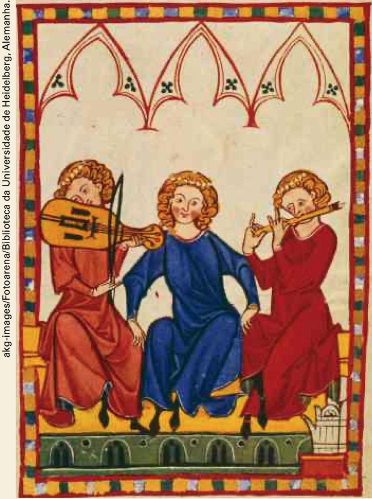
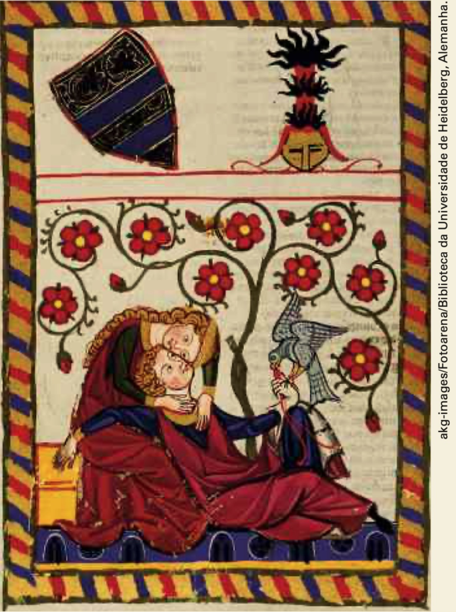
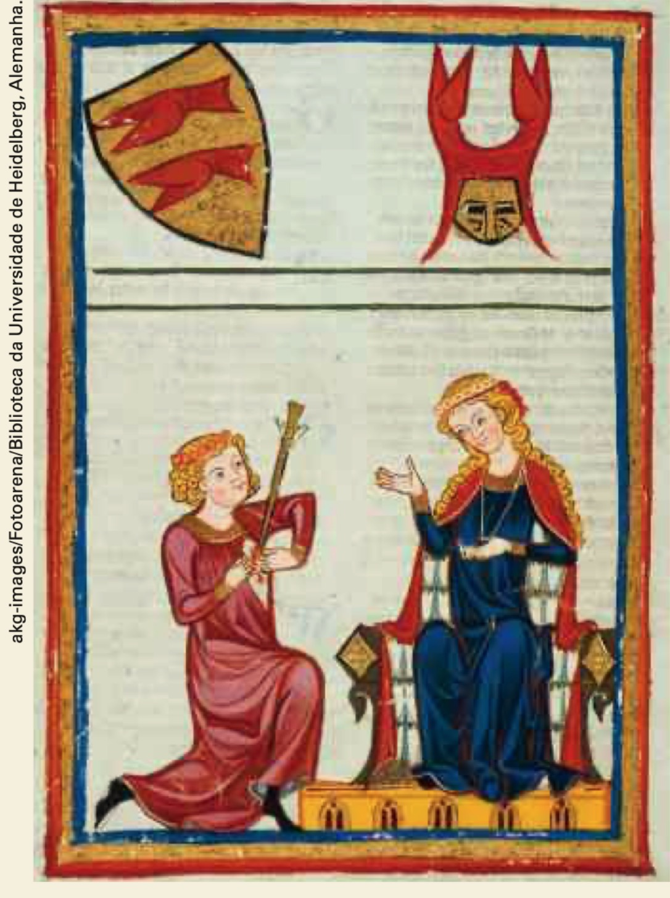
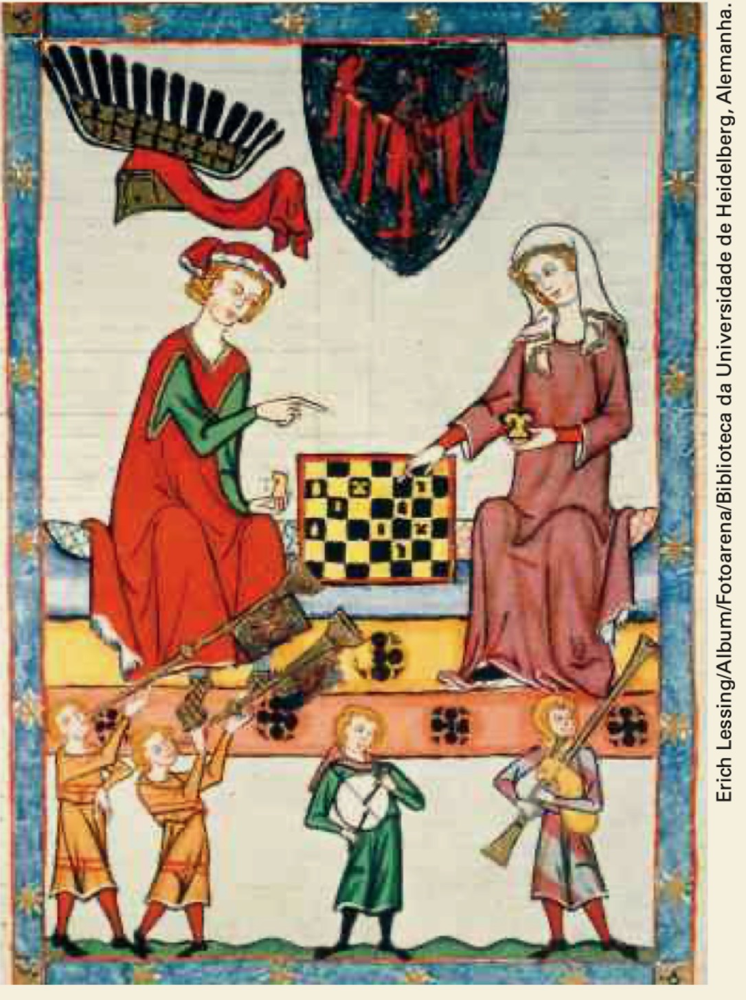
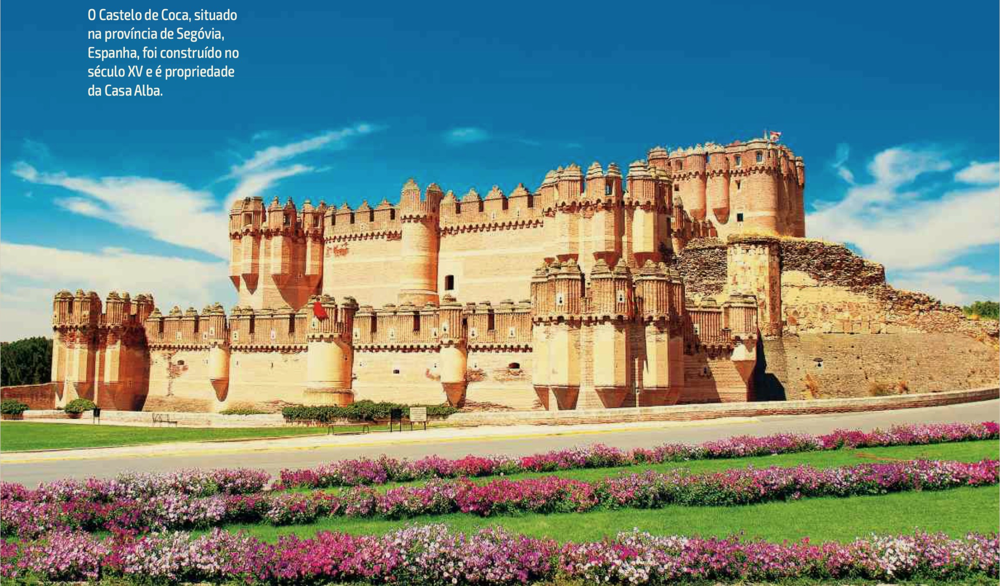
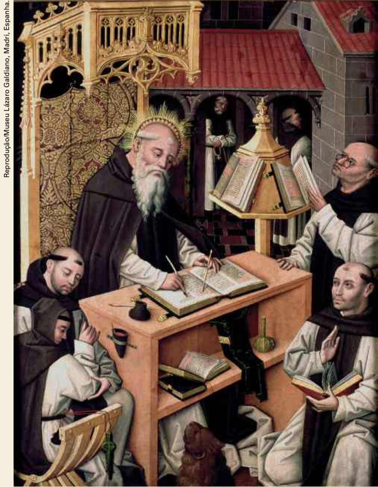
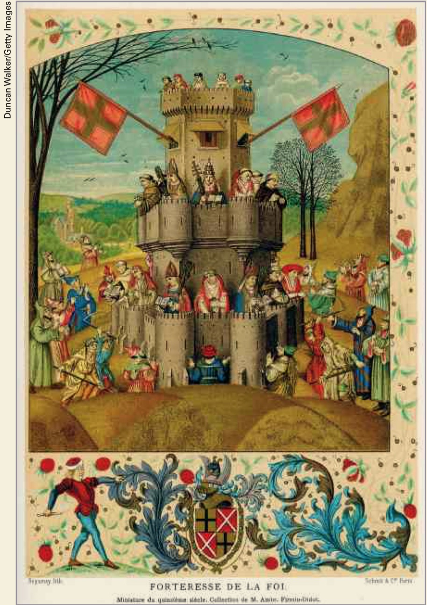
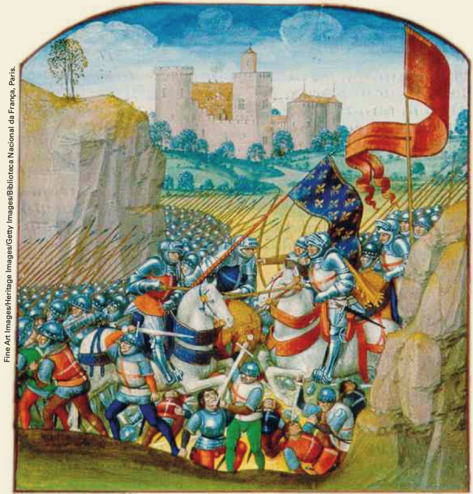

Trovadorismo
O conteúdo desta página foi retirado de ALVES e MARTIN (2016) (pp. 11-20).
Para começar: iluminuras medievais




- As imagens representam cenas do amor cortês, de jograis e menestréis (poetas que apresentavam textos recitados e acompanhados por músicos).
- Os elementos que remetem à Idade Média são: cavaleiros, pessoas tocando instrumentos musicais, além da própria especificidade das imagens (iluminuras medievais)
Movimentos literários
Movimentos literários A literatura – assim como as outras artes – está diretamente ligada às transformações históricas e ao estilo individual de cada escritor, que recria a realidade a partir de sua perspectiva ideológica e de suas escolhas pessoais. Para facilitar a compreensão da produção literária ao longo do tempo, é possível dividi-la cronologicamente nos chamados movimentos literários, que favorecem a percepção de rupturas e de continuidades no modo de conceber os textos.
Esses períodos, também chamados de escolas literárias, seguem principalmente parâmetros europeus e, de certo modo, agregam textos que refletem o modo de vida das pessoas da época e as suas ideias sobre si mesmas e sobre o mundo.
Entretanto, é importante ter consciência de que as fronteiras cronológicas que demarcam o início e o fim de cada movimento literário podem aproximar autores e obras bastante diferentes entre si. É o caso, por exemplo, de Álvares de Azevedo e Castro Alves, dois poetas do chamado Romantismo brasileiro. Embora ambos tenham escrito no mesmo período histórico, o século XIX, e seus textos sejam marcados por certo idealismo predominante na época, cada um possuía preocupações e maneiras de escrever muito particulares.
Além disso, entre um movimento literário e outro há, geralmente, um período de transição, em que valores antigos e novos se misturam, dando origem a obras de difícil classificação. Por isso, devemos considerar que os movimentos literários são balizas cronológicas que funcionam para organizar a produção literária e o conhecimento produzido sobre ela, mas, por vezes, alguns autores podem se distanciar das elaborações estéticas predominantes em sua época, escrevendo de maneira especialmente original ou antecipando tendências artísticas, por exemplo.
Para facilitar o estudo das literaturas escritas em português, que têm percursos e características próprias, esta coleção trilha dois caminhos simultâneos e complementares: o da abordagem histórica e o da abordagem comparativa. Isso significa que, além de serem apresentados autores e obras de maneira cronológica, acompanhando a história literária de cada país, também serão estudados textos em diálogo.
Essa opção pelo comparatismo favorece a percepção de semelhanças e diferenças textuais e culturais e leva à compreensão das especificidades de cada produção literária nacional.
Neste capítulo serão estudados o Trovadorismo e o Humanismo, dois movimentos literários que se desenvolveram durante a Idade Média e que constituem as origens da literatura portuguesa e o momento inaugural da tradição literária escrita em língua portuguesa.
Hoje, oito séculos depois, essa tradição está multiplicada e diversificada em textos de autores espalhados por quatro continentes: Europa (Portugal), América (Brasil), África (Angola, Cabo Verde, Guiné-Bissau, Moçambique e São Tomé e Príncipe) e Ásia (Timor-Leste).
Leitura
Você encontrará a seguir a letra de uma canção escrita pelo compositor baiano Carlos Pitta. O texto, elaborado contemporaneamente, retoma uma das representações mais comuns do amor medieval: a do amor de um corajoso cavaleiro por uma donzela cheia de encantos. Leia-o e responda às questões propostas.
A história do cavaleiro enluarado com a donzela das terras de bem amar
Donzela:
Cavaleiro Enluarado,
De onde vens que não se chega?
De que terras traz, partida,
Coração sujo de estrada?
Vem clareia nos meus braços
Que quero sonhar contigo.
Me dizes qual o teu nome
E serei de ti amada.
Cavaleiro:
Donzela, sou a lua nova
No sertão a clarear.
Sou pó, poeira, estrada.
Sou nuvem de ver passar.
Sou fogo de terra ardendo,
sereno cor de cantar.
Quando ando sou Tirana.
Quando amo sou luar.
Donzela:
E que queres, cavaleiro,
Em terras de Bem Amar?
Cavaleiro:
Ando atrás de ti, donzela,
A mando do meu sonhar.
Donzela:
Anda. Conta-me as caídas
Que encontrou no caminhar.
Cavaleiro:
São bem poucas pra quem ama.
Não merece nem contar.
Donzela:
Meu reino é bem guardado
Por caminhos de adivinhar.
Quero só, de ti, saber:
Como conseguiste entrar?
Cavaleiro:
Foi o vento do querer
Que me deu a montaria
E que me trouxe a teu morar.
Donzela:
Então venceste o meu encanto
E, de ti, serei amada.
Pois amor pra ser verdade
Tem que ter muito lutar.
Cavaleiro:
Que seja como a madrugada,
Que pra cada cavaleiro
Dá uma estrela de guiar.
PITTA, Carlos. A história do cavaleiro enluarado com a donzela das terras de bem amar. Águas de São Francisco. Chantecler, 1979. Faixa 2
A donzela e o cavaleiro. A moça é doce e questionadora, pois quer saber detalhes de como o cavaleiro chegou até ela. Ele é corajoso, persistente e se diz apaixonado pela donzela.
R: As figuras de donzela, cavaleiro, reino e montaria remetem ao universo medieval.
R: Sertão, pó, poeira, terra ardendo e a palavra “montaria”, que remete a ambos os universos.
R: Enluarado, lua nova, nuvem, fogo, terra, vento, madrugada, estrela.
De que modo ela interfere na composição da atmosfera do texto?
R: No poema, a noção de sonho sugere encantamento e magia, instaurando uma atmosfera afinada com o romance que se anuncia.
R: Ele veio de longe, enfrentou muitos obstáculos e, por isso, mostrou-se merecedor do amor da donzela.
Trovadorismo na História
O Trovadorismo, que corresponde ao primeiro período da literatura medieval, é um movimento literário que se desenvolveu na Europa, a partir do século XII, e que compreende, principalmente, cantigas – poemas acompanhados de música – e novelas de cavalaria. Durante a Idade Média, a Igreja católica acumulou grandes territórios e seu poder cresceu muito, tornando-se até maior que o poder dos monarcas (soberanos vitalícios e, comumente, hereditários, de uma nação ou Estado).
Por isso, a sociedade medieval era profundamente teocêntrica (centrada em Deus). Praticamente toda a cultura letrada ficou sob o domínio da Igreja, que, em seus mosteiros, conventos e igrejas, também se tornou responsável pela educação.

Nos mosteiros beneditinos, por exemplo, trabalhavam os chamados “monges copistas”, encarregados de copiar, restaurar e traduzir para o latim textos filosóficos, médicos e literários da Antiguidade greco-latina. Mas a maior parte da população era analfabeta e adquiria conhecimentos teóricos e práticos transmitidos oralmente por meio de tradições populares, sermões e provérbios, que tinham grande importância para sua formação.
A sociedade da Idade Média se organizava no sistema feudal, em que um suserano1 era responsável por um território no qual vassalos2 prestavam a ele o juramento de vassalagem, que pressupunha lealdade, pagamento de impostos, além de obrigações, como defesa mutual em caso de guerras.
1 suserano: senhor feudal, dono das terras.
2 vassalagem: sujeição, submissão
Especialmente na península Ibérica, onde se situam Portugal e Espanha, cristãos e povos muçulmanos oriundos do norte da África, também chamados de mouros, conviveram intensamente desde o século VIII, o que gerou uma cultura rica e miscigenada. Os árabes influenciaram fortemente a agricultura, o artesanato e as artes produzidas nesse período. Porém, com a intensificação das tensões políticas entre os reinos cristãos e a luta pela reconquista dos territórios dominados pelos muçulmanos, que durou do século XI ao século XV, os mouros foram expulsos da região, possibilitando a constituição de Portugal como Estado independente, em fins da Idade Média.


Na tradição literária portuguesa, os primeiros textos literários apareceram escritos em galego (também chamado de galego-português), língua que antecede o português moderno. Esses textos são as cantigas medievais, estudadas a seguir.
As cantigas trovadorescas
O termo “trovadorismo” surgiu em consequência das atividades dos trovadores, ou seja, dos poetas que compunham textos para serem cantados e recitados pelos chamados jograis. O jogral interpretava a cantiga sempre acompanhado por músicos, também chamados de menestréis. Escritas pelos nobres, as cantigas possuíam fortes traços de oralidade e eram divulgadas pelos jograis e menestréis quando eles circulavam por aldeias, feiras e castelos.
Em Portugal, o auge da produção das cantigas trovadorescas se deu entre 1250 e 1350. Elas estão registradas em três cancioneiros (coleções): o Cancioneiro da Ajuda, o Cancioneiro da Biblioteca Nacional e o Cancioneiro da Vaticana. Tradicionalmente, as cantigas são divididas em dois grandes tipos: as líricas e as satíricas. Cada um desses tipos, por sua vez, divide-se em outros dois. As cantigas líricas podem ser de amor ou de amigo, e as satíricas podem ser de escárnio ou de maldizer.
Cantigas líricas
Cantigas de amor
O teocentrismo medieval apresenta-se, nas cantigas de amor, representado pela submissão do trovador a Deus e às damas. O princípio básico que orienta a composição desse tipo de cantiga é o código do amor cortês, que apresenta regras bem definidas sobre o comportamento de homens e mulheres.
Assim, o tema central das cantigas de amor é o suposto sofrimento amoroso do trovador por uma mulher inatingível. Essa dama, muitas vezes referida como “mia senhor” (“minha senhora”), é um símbolo de superioridade, virtude e castidade, e possui um tipo físico característico: traços delicados, cabelos claros, pele alva, riso sutil.
Em relação à sua amada, o trovador deve colocar-se de maneira servil, numa espécie de espelhamento das relações de dependência e submissão que organizavam a sociedade feudal. Nesse sentido, o cavaleiro apaixonado que canta seu amor não correspondido possui, assim como os vassalos, uma série de obrigações e deveres, como ser fiel e discreto. No universo convencional (pautado por regras e convenções) das cantigas de amor, o sofrimento do homem apaixonado chama-se coita de amor, e sua relação de submissão à mulher ideal é chamada de vassalagem amorosa.
A primeira cantiga escrita em galego (ou em galego-português) de que se tem notícia é intitulada “Cantiga da ribeirinha”, assinada por Paio Soares de Taveirós. É interessante perceber que esse texto inaugural da literatura portuguesa é uma exceção entre o conjunto das cantigas de amor. Isso porque o eu lírico fere uma das principais regras do amor cortês: ele se mostra indiscreto ao dizer que viu sua amada “em saias”, ou seja, sem o seu manto. Segundo os padrões morais da época, essa situação seria considerada imprópria. Leia, a seguir, a primeira estrofe dessa cantiga.
No mundo non me sei parelha,
mentre me for’ como me vay,
ca ja moiro por vós, e – ay
mia senhor branca e vermelha,
queredes que vos retraya
quando vus eu vi em saya!
Mao dia me levantei,
que vus enton non vi fea!
No mundo ninguém se assemelha a mim,
Enquanto a minha vida continuar assim,
Porque morro por vós, e ai
Minha senhora de pele alva e faces rosadas,
Quereis que vos descreva
Quando eu vos vi sem manto!
Maldito dia em que me levantei,
E não vos vi feia!
Cantigas de amigo
Assim como as cantigas de amor, as cantigas de amigo são pautadas por convenções e caracterizam-se por possuir um eu lírico feminino, isto é, por expressar a perspectiva da mulher sobre a relação amorosa. Isso significa que, embora fossem escritas por homens (na Idade Média, praticamente todas as mulheres eram analfabetas), os autores assumiam uma identidade feminina e falavam da experiência amorosa como se fossem mulheres.
De modo geral, as cantigas de amigo são construídas em forma de diálogo, em que a moça apaixonada, de origem simples, dirige-se à mãe, às irmãs, às companheiras ou até à natureza para reclamar da ausência de seu amado (chamado de “amigo”). Essas situações dialogadas frequentemente acontecem num cenário campestre, que remete ao universo rural, bastante próximo da natureza: ao pé de fontes, à beira-mar, em um pinheiral ou bosque.
É importante notar que as cantigas de amigo são bastante sonoras e têm muitas repetições, o que torna a linguagem dessas composições mais simples do que a das cantigas de amor. As rimas têm tanto a função de favorecer a coesão dos textos, ao promover a recorrência de determinados sons, como também a de favorecer a memorização. Pelo uso dos paralelismos e dos refrões, que provavelmente eram entoados por um coro, é possível perceber quanto esse tipo de texto estava ligado à música e à dança.
Observe, na cantiga de amigo a seguir, escrita por dom Dinis, como o tema e a forma são característicos. Ao longo das quatro primeiras estrofes, a moça apaixonada pergunta à natureza (flores) se ela tem notícias de seu amado ausente. Na sequência, as flores respondem que o homem está bem e logo se juntará a ela. Perceba como as repetições e o refrão, que estruturam todo o texto, acentuam o tom de lamento da fala da mulher
Ai flores, ai flores do verde pino,
se sabedes novas do meu amigo!
Ai Deus, e u é?
Ai flores, ai flores do verde ramo,
se sabedes novas do meu amado!
Ai Deus, e u é?
Se sabedes novas do meu amigo,
aquel que mentiu do que pôs comigo!
Ai Deus, e u é?
Se sabedes novas do meu amado,
aquel que mentiu do que me á jurado!
Ai Deus, e u é?
– Vós me preguntades polo voss’amigo?
e eu bem vos digo que é san’ e vivo.
Ai Deus, e u é?
Vós me preguntades polo voss’amado?
e eu bem vos digo que é viv’ e sano.
Ai Deus, e u é?
E eu bem vos digo que é san’ e vivo
e seerá vosc’ant’o prazo3 saído.
Ai Deus, e u é?
E eu bem vos digo que é vivé sano
E sera vosc’ant’o prazo passado.
Ai Deus, e u é?
3 prazo: trata-se do prazo combinado entre os cavaleiros e os senhores a que estes prestavam vassalagem. Por um tempo determinado, os cavaleiros deveriam participar dos exércitos e cuidar da defesa territorial do feudo ou reino.
Ai flores, ai flores do pinheiro verde,
Sabeis notícias do meu amigo!
Ai Deus, onde ele está?
Ai flores, ai flores do galho verde,
Sabeis notícias do meu amado!
Ai Deus, onde ele está?
Sabeis notícias do meu amigo,
Aquele que mentiu sobre o que combinou comigo!
Ai Deus, onde ele está?
Sabeis notícias do meu amado,
Aquele que mentiu sobre o que me jurou!
Ai Deus, onde ele está?
– Vós me perguntais pelo vosso amigo,
E eu bem vos digo que ele está são e vivo.
Ai Deus, onde ele está?
Vós me perguntais pelo vosso amado,
E eu bem vos digo que ele está vivo e são.
Ai Deus, onde ele está?
E eu bem vos digo que ele está são e vivo
E estará convosco antes de vencer o prazo.
Ai Deus, onde ele está?
E eu bem vos digo que ele está são e vivo
E estará convosco antes de passar o prazo.
Ai Deus, onde ele está
Cantigas satíricas
As cantigas satíricas tinham o objetivo de criticar determinadas pessoas que faziam parte do grupo social do trovador, ou que haviam ficado famosas na corte por atitudes consideradas socialmente transgressoras. Essas cantigas revelavam aspectos típicos da vida cortesã, como a bebedeira exagerada, a avareza de um senhor feudal ou o conflito entre um trovador e os jograis que tentavam igualar-se a ele.
As modalidades de cantigas satíricas mais conhecidas são:
- cantigas de escárnio – apresentam críticas sutis, geralmente por meio de frases ou palavras de duplo sentido, e não nomeiam a pessoa atingida;
- cantigas de maldizer – apresentam uma crítica mais direta, um vocabulário mais grosseiro e individualizam a pessoa que é alvo da crítica feita pelo trovador.
Leia, a seguir, as duas primeiras estrofes de uma cantiga de maldizer. No texto, a sátira é voltada a Maria Dominga, mulher que, em vez de ensinar trabalhos domésticos às moças de família como apregoava a moral da época, ensinaria a elas maneiras de seduzir os homens
Quem à sua filha quiser dar
uma profissão com que possa prosperar,
há de ir a Maria Dominga,
que lhe saberá muito bem mostrar;
e vos direi o que lhe fará:
antes de um mês lhe ensinará
como rebolar as ancas.
E já a vejo a ensinar
uma filha sua;
e quem observar bem suas artes
pode afirmar isto:
que de Paris até aqui
não há mulher que rebole melhor
DA PONTE, Pero. In: LAPA, Manuel Rodrigues. Cantigas d’escárnio e maldizer. Coimbra: Editorial Galáxia, 1965. (Versão atualizada).
Novelas de cavalaria
As novelas de cavalaria são narrativas de caráter místico que apresentam as aventuras idealizadas do cavaleiro medieval concebido pela Igreja: honrado, casto, dedicado e sempre disposto a qualquer sacrifício para defender a honra cristã. A origem do cavaleiro-herói das novelas de cavalaria remete às Cruzadas: ele está diretamente envolvido em expedições de caráter militar e religioso e na luta em defesa da Europa ocidental contra sarracenos, eslavos, magiares e dinamarqueses, considerados inimigos da cristandade. Muito apreciadas pelos membros das cortes, as novelas de cavalaria eram geralmente lidas para os nobres e suas damas

Não existe uma novela de cavalaria autenticamente portuguesa. Em Portugal, no século XIII, elas surgiram como traduções de textos franceses de autoria anônima. As novelas Amadis de Gaula e A demanda do Santo Graal foram as histórias mais populares que circularam entre os portugueses e tiveram grande influência sobre os hábitos e os costumes da população da época.
A tradição das novelas de cavalaria foi atualizada em vários momentos da História. No século XVII, por exemplo, o escritor espanhol Miguel de Cervantes, em sua obra Dom Quixote de la Mancha, parodia o gênero ao narrar as aventuras dos personagens Dom Quixote e seu escudeiro, Sancho Pança. Contemporaneamente, o romance O cavaleiro inexistente, escrito pelo italiano Ítalo Calvino, também apresenta uma paródia das novelas de cavalaria, narrando a divertida história de um cavaleiro invisível, que ocupa uma armadura, mas não existe fora dela
A demanda do Santo Graal
A demanda do Santo Graal é uma compilação de narrativas orais sobre o lendário rei Artur, que, segundo consta, teria reunido nobres e destemidos cavaleiros em sua Távola Redonda – entre eles Lancelote, Percival e Galaaz – e os incumbido de realizar uma importante missão: encontrar o Santo Graal, cálice com que José de Arimateia teria recolhido o sangue de Jesus crucificado. Dispostos a enfrentar quaisquer desafios, os corajosos cavaleiros partem em busca do objeto sagrado. Suas aventuras constituem um interessante panorama literário da vida medieval.
Leia, a seguir, um fragmento da novela A demanda do Santo Graal, que discorre sobre uma batalha realizada entre o exército do rei Artur e o exército de Morderete
Quando os exércitos foram ajuntados no campo de Salaber, lá se poderiam ver bons cavaleiros de um lado e de outro. Por isso aconteceu que, assim que se feriram às lanças, veríeis tantos jazer em terra mortos e feridos, que maravilha era. E naquela batalha havia sete reis da parte de rei Artur. E o conto do Brado diz quais eram. Ali morreu Ivã, filho de rei Urião. Ali morreu Queia Destrais e Dondinax, o selvagem, e Brandeliz e bem vinte da Távola Redonda, dos quais o que menos valia era tido por muito bom cavaleiro e por bom homem.
Naquela batalha fez Morderete tão bem em armas e tanto se defendeu maravilhosamente, que não houve quem o visse naquele dia que não o tivesse por muito bom cavaleiro estranhamente. E sabei que a história diz que, em toda sua vida, não fez tanto em armas como naquele dia só, porque por suas mãos matou seis companheiros da Távola Redonda, de quem o conto do Brado conta os nomes e os feitos.
E rei Artur também fez tão bem aquele dia, que todos os seus consideraram façanha e nunca mais cansava de ferir com a espada. Por isso Lucão, que estava perto dele e via as maravilhas que fazia, disse a Gilfrete:
– Dom Gilfrete, estejamos seguros de que venceremos esta batalha; vedes aqui rei Artur que boa figura nos faz. Bem ensina a vencer e matar seus inimigos. Bem deve ser chamado rei quem assim sabe ajudar sua gente.
Isto disse Lucão, o copeiro, de rei Artur, quando viu que tão bem o fazia. E rei Artur andou tanto pela batalha, que achou Morderete e deu-lhe por cima do elmo um tão grande golpe, que o meteu em terra estonteado, e cuidou que estava morto, e disse-lhe: – Morderete, muito mal me tens feito, mas não se tornou em teu proveito.
MEGALE Heitor (Org.). A demanda do Santo Graal. São Paulo: Companhia das Letras, 2008. p. 614.
11-20. <!–
Texto de Martim Codex
O Texto I é a versão em galego-português e o Texto II, em português moderno.
5 amigo: namorado.
4 Vigo: cidade litorânea da região da Galícia, na Espanha.
Ai ondas do mar de Vigo,
se vistes o meu amigo,
dizei-me: voltará cedo?
Ondas do mar levantado
se vistes o meu amado,
dizei-me: voltará cedo?
Se vistes o meu amigo,
aquele por quem suspiro
dizei-me: voltará cedo?
Se vistes o meu amado,
que me pôs neste cuidado,
dizei-me: voltará cedo?
- Submissão absoluta à dama.
- Vassalagem humilde e paciente.
- Promessa de honrar e servir a dama com fidelidade.
- Prudência para não abalar a reputação da dama, sendo o cavaleiro, por essa razão, proibido de falar diretamente dos sentimentos que tem por ela.
- A amada é vista como a mais bela de todas as mulheres.
- Pela amada o trovador despreza todos os títulos, as riquezas e a posse de todos os impérios.
Na Idade Média, poucas pessoas sabiam ler. As cantigas eram cantadas e dançadas, e os paralelismos contribuíam para a memorização do texto.
Além do refrão, as cantigas de amigo costu- mam apresentar dois tipos de paralelismo: o de par de estrofes e o leixa-pren. O de par de estrofes consiste na repetição de duas estrofes com uma ligeira diferença entre o verso de uma e o seu cor- respondente na outra estrofe. O leixa-pren é uma espécie de encadeamento entre estrofes pares e ímpares: o segundo verso da primeira estrofe se repete no primeiro da terceira estrofe, o segundo verso da segunda estrofe se repete no primeiro da quarta estrofe, e assim por diante.
Veja os dois tipos de paralelismo nos versos seguintes. As setas em azul correspondem ao pa- ralelismo de par de estrofes, e as setas em verme- lho, ao leixa-pren:
Vaiamos, irmãa, vaiamos dormir
(en) nas ribas do lago, u eu andar vi
a las aves meu amigo.
Vaiamos, irmãa, vaiamos folgar
(en) nas ribas do lago, u eu vi andar
a las aves meu amigo.
En nas ribas do lago, u eu andar vi,
seu arco na mãao as aves ferir,
a las aves meu amigo.
En nas ribas do lago, u eu vi andar,
seu arco na mãao a las aves tirar,
a las aves meu amigo.
[…]
{kind=link}
(Fernando Esguio. In: Segismundo Spina. A lírica trovadoresca. Rio de Janeiro: Grifo; São Paulo: Edusp, 1972. p. 369.)
Um homem ajoelha-se na frente de outro ho- mem, une as duas mãos e as coloca nas mãos da- quele que está em pé à sua frente. Enquanto isso acontece, o primeiro diz algumas palavras e se re- conhece como o “homem” do outro homem. Depois, beijam-se na boca e estabelece-se um acordo e uma amizade “civil”, o primeiro jovem jura sobre os Evan- gelhos ser fiel ao segundo por toda sua existência.
Quem acha isto meio “estranho”, fique sa- bendo que este ritual forneceu uma das principais bases ao sistema feudal: os funcionários reais, os oficiais de todas as classes, os clérigos e até mes- mo alguns camponeses passavam por ele antes de assumirem suas funções. Com ele, tornavam-se vassalos de seus senhores.
Essas relações todas podem ser explicadas pela necessidade de garantir fidelidade, assegurar prestação de serviços ou o pagamento de tributos, impor penalidades aos que não cumprissem suas obrigações de dependência.
(Paulo Miceli. O feudalismo. São Paulo: Atual, 1988. p. 35-6.)
Mídias
Vídeos
O CORTIÇO, DE ALUÍSIO AZEVEDO (#20)
Uma análise sobre o clássico brasileiro do naturalismo - O Cortiço de Aluísio Azevedo
Literatura - O Cortiço - Aluísio de Azevedo - Laura Camilo dos Santos Cruz